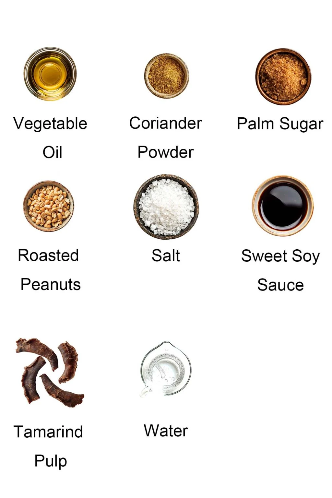
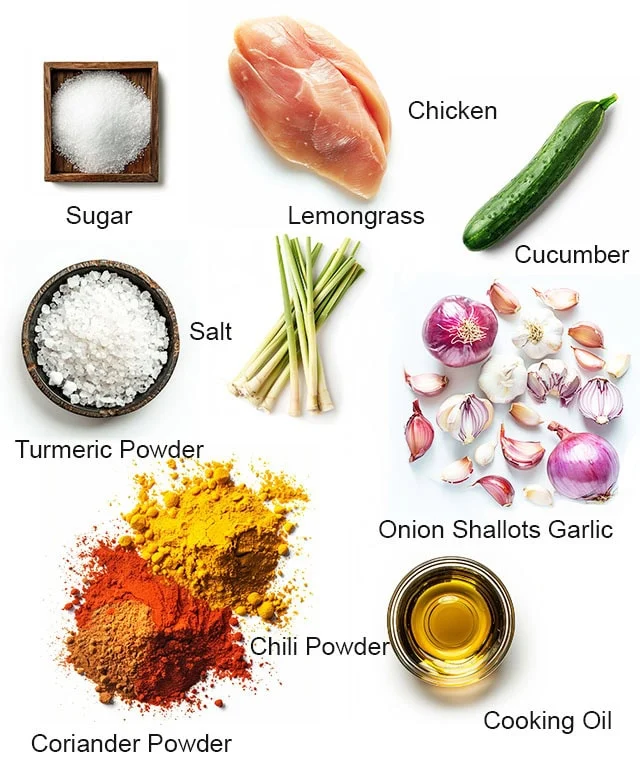
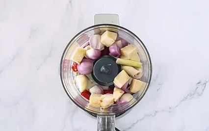
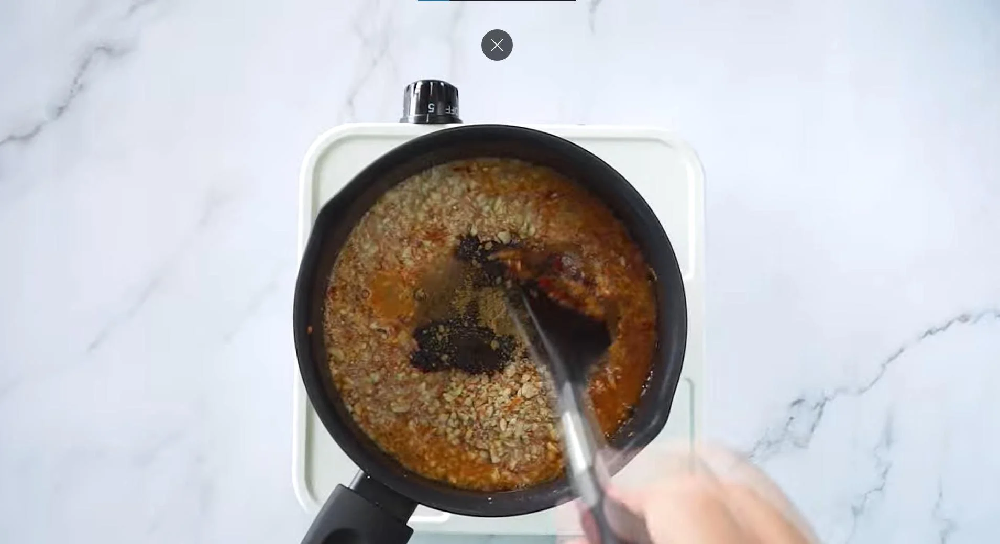
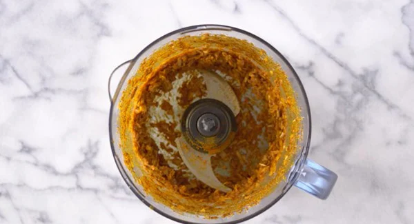
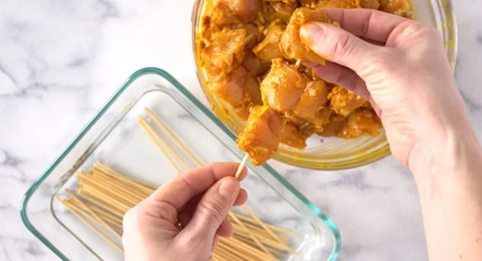

Satay Recipe
Ingredients for satay and sauce:
- 1 cup peanuts
- 1 tablespoon tamarind pulps
- 1 cup water
- 1/4 cup oil
- 1 tablespoon coriander powder
- 1 tablespoon sweet soy sauce
- 8 dried chilies, 5 cloves garlic, 6 clove small shallots
- 2 boneless chicken
- 1 cucumber
- 1 small onion
- 3 stalk lemongrass, 1/2 inch galangal
- 1 teaspoon chili powder
- salt and sugar


Instructions:
Sauce preparation
- Crush the peanuts and blend spice paste ingredients using food processor until very fine and set aside.

- Put tamarind pulp inside a bowl of warm water and let it sit for 15 minutes. Then, use spoon to squeeze
the juice out, keep the juice and toss the pulp.
- Heat up oils, add in spice paste, lemongrass and smashed peanuts along with tamarind juice, salt, sugar
coriander powder and sweet soy sauce. Stir it until all mixed together nicely and become thickens.

Satay preparation
- Blend all marinade ingredients using food processor until smooth.

- Mix the chicken with the marinade and let it hang out in fridge for at least 6 hours. When ready to
cook, thread 3-4 pieces of chicken onto each bamboo skewer and grill it for about 2-3 minutes on each
side. Basted them with oil while grilling to make them extra juicy.

- Lastly, serve them up hot with fresh cucumber slices, onions and peanut sauce prepare earlier. Congrats,
a lovely dish has done.
← Back to Recipes